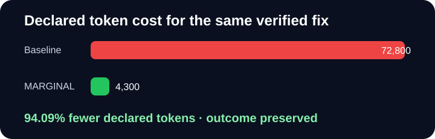

Compute capital allocation for AI agents
MARGINAL Killer Demo
The defect
- return total - rate
+ return total * (1 - rate)
Verifier: apply_discount(100.0, 0.20) == 80.0
The baseline runs every search, reviewer, rewrite, and audit. MARGINAL funds only the highest-value action in each stage, then proves the same bug is fixed.
Deterministic functional demonstration using declared action-cost estimates; not provider telemetry, not a production benchmark, and not a claim about every agent workload.

94.09%
fewer declared tokens
66.67%
fewer calls
72,800 →
4,300declared tokens
FAIL → PASS
each execution
Diagnose
Funded inspect the failing assertion.
| Candidate | Declared tokens | Expected gain | Score | Decision |
|---|---|---|---|---|
| inspect the failing assertion | 1,200 | 0.220 | 0.189 | FUNDED approved: marginal ROI 7.166 |
| scan the entire repository | 9,000 | 0.050 | -0.179 | SKIPPED rejected: marginal ROI 0.218 below 1.000 |
| ask two parallel reviewers | 14,000 | 0.040 | -0.369 | SKIPPED rejected: marginal ROI 0.098 below 1.000 |
Fix
Funded apply the targeted one-line patch.
| Candidate | Declared tokens | Expected gain | Score | Decision |
|---|---|---|---|---|
| apply the targeted one-line patch | 2,400 | 0.500 | 0.433 | FUNDED approved: marginal ROI 7.418 |
| rewrite the complete pricing module | 12,000 | 0.200 | -0.156 | SKIPPED rejected: marginal ROI 0.561 below 1.000 |
| ask a frontier model for an alternative patch | 18,000 | 0.150 | -0.501 | SKIPPED rejected: marginal ROI 0.230 below 1.000 |
Verify
Funded run the targeted verifier.
| Candidate | Declared tokens | Expected gain | Score | Decision |
|---|---|---|---|---|
| run the targeted verifier | 700 | 0.350 | 0.334 | FUNDED approved: marginal ROI 21.394 |
| run the full test suite | 4,500 | 0.080 | -0.025 | SKIPPED rejected: marginal ROI 0.763 below 1.000 |
| request a premium model audit | 11,000 | 0.050 | -0.348 | SKIPPED rejected: marginal ROI 0.126 below 1.000 |
Reproduce it
marginal killer-demo --output killer-demo-output